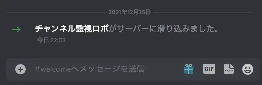

何？これは
この記事は UEC 2 Advent Calendar 2021 16日目の記事です。飛び入り参加です。
先日の記事はNasatameさんの「最近見ているYouTubeの話」でした。
https://nasatame.hatenablog.com/entry/2021/12/13/073814
面白そうなチャンネルが5つも紹介されています。特に3位のサイトは僕が吹奏楽部だったときに参考音源としてたまに聴いていたのですが、他にも色々なジャンルの動画が出されているそうでかなり気になってしまいました。
あなたは誰？
こんにちは！uec19のつまみです。先日はアドカレその1にぶん投げた 中央環状線一周記事 で皆さんの通信量を破壊してしまい申し訳ありません。まだ未読の方はおうちWi-Fiとかで読んでください。
さて、皆さんはDiscordサーバーに入ったら粗悪なチャンネルを大量生産するバカタレがいたという経験はありますでしょうか？そうですよね、困りますよね。
僕のいるサーバはこんなのが250個近くあり最悪です。
今回はそんな最悪なサーバのチャンネル一覧をインターネットに公開して懲らしめてやろうと思います。
作戦
チャンネル乱立オタクは毎日チャンネルを作るので手作業でチャンネルをまとめると僕の大切な時間が失われてしまいます。そこで Discord API を叩いてチャンネル一覧を手に入れましょう。Pythonを使えば簡単そうなのでDiscord APIラッパーライブラリの Disnake を使うことにします。
さらに Discord API が叩けても手作業で毎日更新するのはつらいので GitHub Actions を使って毎日勝手に更新されるようにします。公開先はみんな大好き GitHub Pages です。GitHub Pages を使うと簡単に自分のホームページが作れたりするのでHP作りに興味がある人は調べてみると良いでしょう。
Discord とは
Discord については UEC Advent Calendar 2021 12日目のあすなろわさび先生が書いて下さっているのでそちらを引用したいと思います。
当初はゲーマー向けコミュニケーションツールとして始まり、今ではコロナ禍も相まって主要なSNSの一つとなりつつあります。
なるほど！引用終わり
Disnake とは

Python から簡単に Discord API を叩ける便利ライブラリといえば discord.py が有名でしたが、なんとこの前開発終了が発表されてしまいました。
(まだ使えなくはないんだろうけど) 代替手段はないか……と探したところ、Disnake という discord.py の fork を見つけました。ちょこちょこメンテナンスされてそうなので今回はこちらを使ってみることにします。
GitHub Actions とは
GitHub Actions はpush時や特定の時間に勝手にスクリプトを動かしてくれる便利ツールです。今回はこいつを使って
- Discord API を叩いて
- jsファイル (チャンネルのデータ) を吐いて
- GitHub Pages で公開する
を毎日やらせようと思います。
やってみる
1. bot を作る
まずチャンネル情報を入手するために Discord Developer Portal で Discord の botを作ります。
このスパイをとりあえず変なオタクサーバーに侵入させます。

上手く忍び込めたようです。botの設定ページからTokenが貰えるのでこれを使ってチャンネル一覧を吐くコードを書いてみましょう。
2. チャンネル一覧を出力してみる
コードを書いてみます。ま〜る書いて……
import disnake
client = disnake.Client()
TOKEN = 'DISCORD_BOT_TOKEN'
GUILD_ID = int('DISCORD_GUILD_ID') # サーバのID
@client.event
async def on_ready():
categories = client.get_guild(GUILD_ID).categories
for category in categories:
print(category.name)
for ch in category.text_channels:
print(' ' + ch.name)
await client.close()
if __name__ == '__main__':
client.run(TOKEN)
フォイ！できました！実行してみましょう！
ちゃんと一覧が出ていていい感じです。
今回はウェブで公開したいのでこれを更にいい感じの形式で出力する必要があります。HTMLファイルを頑張って吐かせてもよいのですが、今回はJavaScriptの配列を作って channels.js として保存してみましょう。こうするとあとで扱いやすくて便利です。
そんなわけでちょっと改良して吐いてみます。
import os
from typing import Optional
import disnake
client = disnake.Client()
TOKEN = 'DISCORD_BOT_TOKEN'
GUILD_ID = int('DISCORD_GUILD_ID')
@client.event
async def on_ready():
categories = client.get_guild(GUILD_ID).categories
js += 'const categories = ['
for category in categories:
js += '{'
js += f'"name": "{category.name}",'
js += '"channels": ['
for ch in category.text_channels:
js += '{'
js += f'"name": "{ch.name}",'
js += f'"topic": "{ch.topic}",'
js += '},'
js += ']},'
js += '];'
with open('pages/channels.js', 'w', encoding='utf-8') as f:
f.write(js)
await client.close()
if __name__ == '__main__':
client.run(TOKEN)
なんかゴリゴリしてますが頑張ってやるとこんな感じです。動かしてみましょう！
気持ち悪いファイルが出てきました。しかし、これはJavaScriptには配列に見えるのでWebページに組み込むのがかなり簡単になりました！更に頑張ってコードを書いて綺麗に出力するとこんな感じです。
データをjsファイルで保存しておくやり方は若干抵抗感がありますが、Twitter社もtweets.jsとか言ってやってるのでOKです。たぶん
3. 実際にサイトを作ってみる
簡単なウェブページを作ってみましょう。適当にdoctype html html head meta charset title… すると完成しますね。
<!DOCTYPE html>
<html lang="ja">
<head>
<meta charset="utf-8">
<script type="text/javascript" src="channels.js"></script>
<script type="text/javascript" src="builder.js"></script>
<title>Otaku Discord Channels</title>
</head>
<body>
<h1 id="title">Otaku Discord Channels</h1>
<div id="content"></div>
</body>
</html>
おっと！これだけだとまだ足りないのでJavaScriptも書きます。
function writeChannels() {
document.getElementById('title').innerHTML = serverName;
let html = '<ul>';
for (const category of categories) {
html += '<li>' + category.name + '</li>';
html += '<ul>';
for (const channel of category.channels) {
html += '<li>' + channel.name + '</li>';
if (channel.hasTopic) {
html += '<ul><li>' + channel.topic + '</li></ul>';
}
}
html += '</ul>';
}
html += '</ul>';
document.getElementById('content').innerHTML = html;
}
onload = writeChannels;
できました。先ほどPythonに生成させた categories 配列を使ってサイトに組み込んでいます。動かしてみましょう。
いい感じに出力されました！もうちょい上手く手直ししたりCSSを書いたりするとこうなります。

良い感じです！254チャンネルは多すぎるだろ
4. Actions Secret を使う
さて、サイトも完成したことですしGitHubに公開しましょう。
……
そうです、まだ一つやらなければならないとても重要なことがありました。人に知られてはならないbotのTokenがプログラムに直接書かれています。これをpushするわけにはいきません！でもGitHub Actionsくんに実行させたいのでtokenは必須です。どうすればよいでしょうか？
そこで環境変数とActions Secretという機能を使います。実はGitHub Actionsでは秘密にしたい情報を隠しておく機能があります。
リポジトリの設定の Secrets -> Actions にあります。この値には GitHub Actions に使うファイルからアクセスすることができます。更にこれを環境変数にできるので、Pythonのコードもそんな感じで書き換えていましょう。
TOKEN = 'DISCORD_BOT_TOKEN'
GUILD_ID = int('DISCORD_GUILD_ID') # サーバのID
こんな感じの貧弱なコードだったので……
import os
TOKEN: Optional[str] = os.environ.get('DISCORD_BOT_TOKEN')
GUILD_ID = int(os.environ.get('DISCORD_GUILD_ID'))
として環境変数からTokenを手に入れられるようにします。自分の開発環境にも環境変数を設定しておきましょう。これで安全にpushする準備ができました。pushしてしまいましょう！
5. GitHub Actions を使う
さて、pushしたのは良いですがこのままだと何も起きません。pushされると
- Pythonスクリプトを実行して
- channels.js を出力して
- GitHub Pages 上で公開する
ようにしたいです。そこで GitHub Actions を使います。
リポジトリの Actions タブから新しい workflow を作ります。
するとエディタが出てくるのでこんな感じで書きます。
name: Deploy website
on:
push:
branches: [ main ] # pushしたら実行
pull_request:
branches: [ main ] # PRが来たら実行
schedule:
- cron: '0 0 * * *' # 毎朝9時に実行
# Allows you to run this workflow manually from the Actions tab
workflow_dispatch:
jobs:
build:
runs-on: ubuntu-latest
steps:
- uses: actions/checkout@v2
# Python の実行準備
- name: Setup Python
uses: actions/setup-python@v2
with:
python-version: '3.8'
architecture: 'x64'
# ライブラリ (disnake) のインストール
- name: Install dependencies
run: pip install -r requirements.txt
# 実行
- name: Run Python
# 環境変数の設定 (Tokenの設定！！！！)
env:
DISCORD_BOT_TOKEN: ${{ secrets.DISCORD_BOT_TOKEN }}
DISCORD_GUILD_ID: ${{ secrets.DISCORD_GUILD_ID }}
run: python fetcher.py
# GitHub Pages に反映させる
- name: Deploy website
uses: peaceiris/actions-gh-pages@v3
with:
github_token: ${{ secrets.GITHUB_TOKEN }}
publish_dir: pages # pagesフォルダを公開する
こうです。意味不明なのでコメントだけ読んで雰囲気を理解してもらえればOKです。こうすると毎朝9時に
- 変なオタクサーバからチャンネル情報を落として
- GitHub Pages で公開する
流れを勝手にやってくれます。便利ですね！何が？
6. 完成！
~~という感じで無事 https://trpfrog.github.io/otaku-channels/ でサイトを公開することができました。正しく動いていれば明日以降も更新され続けると思われます。(なにせ記事を書いた今完成したため……(は？))~~
12/20追記: ちゃんと毎日更新されていました！が、諸事情により GitHub Pages での公開をやめました。詳しくは記事の最後に追記したのでお読みください。新URLはこちらです: otaku-discord.trpfrog.net
余談

この話を聞いたオタクがウキウキしながらXSS(?)を仕掛けて来やがったのでサニタイズライブラリのbleachを使って殺してやりました。
import bleach
topic = bleach.clean(channel.topic)
めでたしめでたし。
bleachはMozillaが作っているらしいです。
終わりに
今回は毎日GitHub ActionsにDiscord APIでオタクサーバを訪問させてチャンネルを晒すサイトを作りました。皆さんもチャンネル乱立オタクがいて困った時はやってみてください。
~~次回は19日のmarbleさんの記事です。後でリンクを貼ります。17, 18が空いているので僕みたいに急に書きたくなった人がいたら書きましょう！~~
次回は17日のごっちさんの記事「猫でもわかるファイルサーバ構築」です。
https://gotti.dev/post/uecadvent2021_fileserver/
18日もBさんの記事で埋まったみたいですし、UEC 2 Advent Calendar の後半は全部埋まったみたいです。すごい
それでは、さようなら
12月20日 追記: やっぱりGitHub Pagesはやめた
この記事で紹介した方法には一つだけ、非常に大きな問題点がありました。それはGitHubのContributionsに影響が出ることです。草が自動で生え続けます。
草が生えると嬉しいですが、自分は何もしていないのに草が生えるのはそれはそれで結構しんどいです。チート感マシマシです。そこで外部のホスティングサービスを使ってみることにしました。
まずはこのつまみネットでも使っている Cloudflare Pages です。ビルド時間がバカ長いという欠点がありますが、サイトアクセスは速いし私も使い慣れているので良さそうです。
しかし、こちらはこちらで問題がありました。Cloudflare Pages では Python の最新バージョンが 3.7 なのです。実は今回使っているdisnakeの必須要件が Python 3.8 以上なので、無理です。他のところにしましょう。
そこで今回は Vercel を使うことにします。なんと最近 Python 3.9 が使えるようになった？みたいなのでバージョン問題はクリアです。早速設定します。
Vercel と GitHub を連携してはいはい設定を進めると上のような画面に出ます。
- BUILD COMMAND に channels.js を吐くPythonコマンドを入れ、
- OUTPUT DIRECTORY にHTMLファイルなどのある pages フォルダを指定し、
- INSTALL COMMAND にdisnakeなどをインストールするコマンドを入れ、
- Environment Variables にTokenなどを入れて
Deployを押すとデプロイが始まります。するとなんとこれだけでうまくデプロイされました。簡単すぎ！
次に定期実行の設定をします。定期的なデプロイ自体は (おそらく) Vercel単体ではできないのでGitHub Actionsを使います。
まずはVercelの設定から git → Deploy Hooks に入ると「叩くと勝手にデプロイが始まるリンク」が手に入るのでそれをもらいます。
次に GitHub Actions の自動デプロイに使った main.yml を次のように書き換えます。
name: Deploy website
on:
push:
branches: [ main ]
pull_request:
branches: [ main ]
schedule:
- cron: '0 3 * * *'
workflow_dispatch:
jobs:
build:
runs-on: ubuntu-latest
steps:
# ここで Deploy Hook を叩く
- run: curl -X POST ${{ secrets.DEPLOY_HOOK }}
Deploy Hook は知られるとまずいので、先にも書いたように Actions Secret を使うと良いでしょう。
これでGitHubに草を生やさずに定期デプロイされるウェブサイトを作ることができました！ちなみに gh-pages ブランチを消去したら過去の草も消えてくれました。めでたしめでたし
GitHub上にコードを載せているので似たようなお悩みを抱えている方はぜひやってみてください♪ それではまた次回の記事でお会いしましょう！さようなら